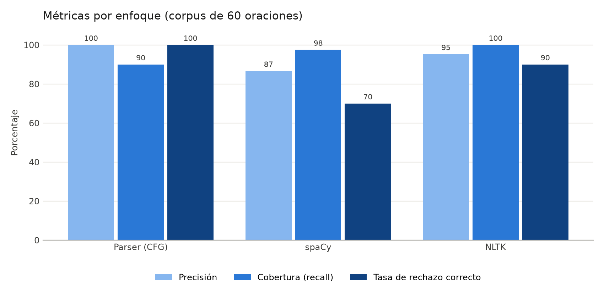
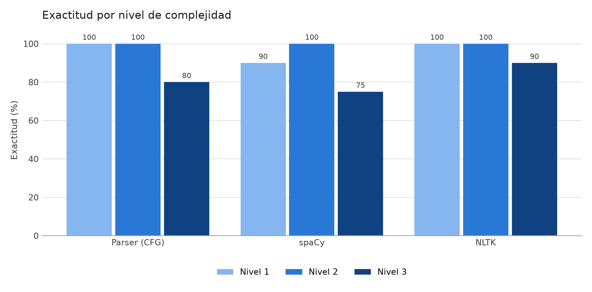

| Integrante | Carné |
|---|---|
| Carlo Enrique Guerra Vega | 00052220 |
| Federico Josué Calderón Durán | 00215818 |
| Kelvin Rodrigo Iraheta Morales | 00083121 |
| Allan Josué López Escalante | 00049222 |
La Fase 1 (Grupo 8, 2026) mostró que una CFG del español funciona mientras alguien escriba cada regla, y que spaCy cubre más oraciones a cambio de perder garantías. En esta fase se mide esa diferencia: el mismo corpus de 60 oraciones etiquetadas pasa por cuatro enfoques, que son un parser propio con una CFG del español, spaCy con reglas de concordancia, un etiquetador de NLTK con reglas y Gemini 3.1 Flash-Lite por API, este último en variantes zero-shot y few-shot. Se separan dos referencias: si la oración es correcta en español y si pertenece al lenguaje que genera la CFG. La gramática genera 36 de las 40 oraciones correctas; las otras cuatro (49–52) quedan fuera por construcciones que no tiene.
Frente al español, la exactitud es 93.3 % para el parser, 88.3 % para spaCy, 96.7 % para NLTK, y 90.0 % y 91.7 % para el LLM en zero-shot y few-shot. El cambio más grande del LLM está en la fidelidad a la CFG: sube de 90.0 % a 98.3 % con ejemplos, rechaza las cuatro oraciones correctas que la gramática no genera y baja de 25 a 6 los árboles incorrectos. Aun así, acepta un error de concordancia y construye derivaciones inválidas. Las cifras se reproducen con python fase2/evaluar.py a partir de los cinco logs, sin volver a consultar la API.
El parser reutiliza el motor de la Fase 1 (fase1/motor.py): descenso recursivo con backtracking que devuelve todos los árboles que cubren la entrada completa. Ningún árbol significa rechazo; uno, aceptación; más de uno, ambigüedad. El motor recibe la gramática de fase2/gramatica_es.py sin copiarse ni añadir un corrector externo de concordancia.
La CFG tiene 57 no terminales, 207 producciones y 47 palabras. La concordancia se codifica con categorías, igual que en la Fase 1: sn_ms → det_ms n_ms mod_ms solo admite determinante, sustantivo y modificadores masculinos singulares, y un sujeto singular solo se combina con un predicado singular. Cubre presente y pretérito, primera y tercera persona, adjetivos, adverbios, sintagmas preposicionales con «en» y «con», y relativas de sujeto y de objeto, también anidadas. La negación y la coordinación existen solo en formas fijas ('no' v_s, v_s 'y' v_s). Antes de analizar, el motor pasa el texto a minúsculas, quita puntos y comas y separa por espacios; todas las palabras del corpus están en el léxico, así que ningún rechazo se debe a vocabulario.
La gramática acepta 36 oraciones y rechaza 24: las 20 incorrectas y las correctas 49–52, por producciones ausentes. La 47, «El perro come la carne en la casa.», tiene dos derivaciones, porque el sintagma preposicional puede modificar al objeto o al verbo. Frente a las 93 producciones de la gramática extendida de la Fase 1, las 207 actuales muestran el costo de cubrir más combinaciones de rasgos. Ese crecimiento no prueba que esas construcciones estén fuera del Tipo 2: agregar producciones las cubriría.
El corpus tiene 60 oraciones distintas escritas a mano, 40 correctas y 20 incorrectas, guardadas en fase2/corpus.csv con las columnas id, oracion, nivel, esperado y arbol_esperado. El id enlaza cada oración con todos los logs. La columna esperado indica si la oración es correcta en español, no lo que responde el parser.
| Nivel | Correctas | Incorrectas | Total | Qué se prueba |
|---|---|---|---|---|
| 1: simples | 14 | 6 | 20 | Concordancia básica, pretérito y pronombres |
| 2: intermedias | 14 | 6 | 20 | Adjetivos, adverbios, objetos y sintagmas preposicionales |
| 3: complejas | 12 | 8 | 20 | Relativas, anidamiento, ambigüedad, concordancia a distancia y construcciones fuera de la CFG |
| Total | 40 | 20 | 60 | El mismo conjunto para los cinco logs |
Las oraciones simples comprueban aceptación y rechazo básicos; las intermedias combinan modificadores dentro de lo que la gramática intenta cubrir; las complejas prueban lo que probablemente la excede. Las incorrectas son sobre todo errores de concordancia nominal y verbal, incluida la distancia entre antecedente y verbo; la 59 y la 60 también involucran la posición del adjetivo y dos verbos sin enlace. El corpus usa 40 de las 47 palabras de la CFG y no tiene duplicados tras normalizar.
Dos referencias. Además de esperado, el evaluador calcula si cada oración pertenece al lenguaje de la CFG, con todas las derivaciones del motor. Las dos referencias solo difieren en 49–52: son correctas en español, pero la gramática no las genera. Rechazarlas cuenta como falso negativo frente al español y como acierto de fidelidad a la CFG. Esta distinción es la base para responder si el LLM respeta las reglas dadas.
Cada enfoque se corrió una vez sobre el corpus completo y guardó un log JSON en fase2/logs/ con metadatos (versiones, parámetros, fecha) y un resultado por id. El evaluador comprueba que cada log tenga los 60 id y la misma oración literal que el CSV antes de calcular nada.
Parser (correr_parser.py, Python 3.12.10). Guarda veredicto, primer árbol, número de árboles, motivo del rechazo y tiempo.
spaCy 3.8.18 con el modelo es_core_news_md 3.8.0, entrenado con noticias en español (Honnibal et al., 2020; Explosion, s. f.). Recibe cada oración con su mayúscula y su punto originales. spaCy no rechaza oraciones, así que se reutiliza la regla de la Fase 1 (fase1/tabla_nlp.py): rechaza si sus propios rasgos muestran un desacuerdo de género o número entre determinante, sustantivo y adjetivo, o de número entre sujeto y verbo. Se evalúa el sistema «spaCy + regla», no un juicio de gramaticalidad propio de spaCy.
NLTK 3.10.3. No trae un modelo de español listo, así que se entrenó un etiquetador en cadena (BigramTagger → UnigramTagger → RegexpTagger por sufijos) con cess_esp: 6 030 oraciones y 188 802 palabras con etiquetas EAGLES (NLTK Project, s. f.). Entrenado con el 90 % inicial y probado con el 10 % final, etiqueta bien el 86.2 % de las palabras; para el experimento se entrenó con el 100 %. Ese 86.2 % no es la exactitud sobre nuestro corpus. Las etiquetas EAGLES traen género y número, y la regla de rechazo revisa grupos nominales vecinos, las relativas y el primer verbo principal; también trata un sujeto «X y Y» como plural. Por eso es más elaborada que la de spaCy.
Se llamó a la API de Google (generateContent) desde Python con fase2/llm_experimento.py, una solicitud independiente por oración, sin historial. El modelo pedido y devuelto en las 120 respuestas fue gemini-3.1-flash-lite (Google, 2026). La clave se leyó de la variable de entorno GEMINI_API_KEY y no aparece en prompts ni logs.
| Parámetro | Valor (idéntico en ambas variantes) |
|---|---|
| API y modelo | v1beta; gemini-3.1-flash-lite |
| Temperatura · máximo de salida · razonamiento | 0 · maxOutputTokens = 2048 · thinkingLevel = MINIMAL |
| Llamadas | 60 zero-shot y 60 few-shot, el 18 de noviembre de 2026; una oración por llamada |
| Formato pedido | JSON con salida («acepta» o «rechaza») y arbol en notación de paréntesis, null al rechazar |
Prompts. El zero-shot contiene las instrucciones, el texto completo de fase2/gramatica_es.txt y la oración. Pregunta si existe una derivación desde oracion, «aunque la oración sea correcta en español», no si la oración suena bien. El few-shot añade cinco ejemplos fijos: tres aceptaciones (pretérito con adverbio, primera persona con objeto, relativa de objeto) y dos rechazos (desacuerdo del adjetivo y negación con objeto). Ninguno está en el corpus, ni siquiera tras normalizar. No se envían el nivel, la etiqueta esperada ni resultados de otros enfoques. Los prompts exactos del ID 1 están en los Anexos C y D; los 120 están completos en los logs, cada uno con su timestamp de envío y de respuesta.
Interpretación de respuestas. Un JSON ilegible, un árbol que no se puede leer o una respuesta incompleta se guardan como invalida; no se repara ninguna respuesta. Hubo 163 intentos: 120 respuestas y 43 errores del servicio (42 HTTP 503 y un 429). Esos errores se reintentaron; ninguno se contó como rechazo y ninguna respuesta ya obtenida, inválida o no, se volvió a pedir. Temperatura 0 no garantiza respuestas idénticas en otra corrida.
La clase positiva es «acepta». Frente a la etiqueta en español, un verdadero positivo (VP) es una correcta aceptada; un falso negativo (FN), una correcta rechazada; un falso positivo (FP), una incorrecta aceptada; y un verdadero negativo (VN), una incorrecta rechazada. Una respuesta invalida cuenta como error (FN o FP), así que las 60 oraciones quedan siempre en el denominador.
| Medida | Fórmula | Qué dice |
|---|---|---|
| Exactitud | (VP + VN) / 60 | Decisiones correctas del total |
| Precisión | VP / (VP + FP) | De lo que aceptó, cuánto era correcto |
| Cobertura (recall) | VP / (VP + FN) | De las correctas, cuántas aceptó |
| Rechazo correcto | VN / (VN + FP) | De las incorrectas, cuántas rechazó |
| Fidelidad a la CFG | decisiones iguales a la pertenencia a la CFG / 60 | Si acepta exactamente lo que la gramática genera |
fase2/evaluar.py.Un error de etiquetado es un VP en el que alguna palabra recibe una categoría distinta de la del árbol esperado, tras traducir cada sistema a un inventario común (determinante, nombre, verbo, adjetivo…). Cuenta oraciones, no palabras. Para el parser y el LLM, además, se compara el árbol completo: cuenta como correcto el árbol esperado o cualquier otro que la CFG asigne, así que en la 47 valen las dos lecturas. spaCy y NLTK no producen árboles de constituyentes, así que esa medida no se les aplica. La fidelidad de spaCy y NLTK es solo informativa: no recibieron la gramática.
Todas las tablas de esta sección se copian de fase2/resultados/tablas.md, que genera el evaluador.

NLTK con su regla obtiene la mayor exactitud (58/60). El parser clasifica 56/60 sin ningún falso positivo; sus cuatro fallos son las oraciones fuera de su cobertura. El LLM acierta 54/60 en zero-shot y 55/60 en few-shot. Los perfiles son distintos: el parser rechaza todas las incorrectas y cubre 36/40 correctas; spaCy cubre 39/40 pero acepta seis incorrectas; NLTK cubre las 40 y deja pasar dos; las dos variantes del LLM dejan pasar una.

Los niveles 1 y 2 casi no separan a los enfoques: todos aciertan al menos 18/20. Las diferencias aparecen en el nivel 3, donde están la concordancia a distancia y las construcciones fuera de la gramática. Que el few-shot baje en el nivel 3 de 17/20 a 15/20 no significa que obedezca peor: sus dos rechazos nuevos, la 50 y la 52, son justo los que pide la CFG (sección 5.2).
| Enfoque | Falsos positivos (acepta una incorrecta) | Falsos negativos (rechaza una correcta) | VP con error de etiquetado |
|---|---|---|---|
| Parser (CFG) | ninguno | 49, 50, 51, 52 | ninguno |
| spaCy | 15, 17, 56, 57, 59, 60 | 49 | 16 oraciones |
| NLTK | 59, 60 | ninguno | 13, 33, 34 |
| LLM zero-shot | 56 | 4, 11, 26 (inválidas), 49, 51 | 29, 30, 42, 45, 50, 52 |
| LLM few-shot | 56 | 49, 50, 51, 52 | ninguno |
id del corpus (fuente: fase2/resultados/detalle.csv). Las incorrectas que más enfoques dejan pasar (56, 59 y 60) son de nivel 3: concordancia a distancia.Parser. Sus cuatro FN son las oraciones 49–52: «El perro y la gata duermen» (sujeto coordinado), «El perro come la carne y duerme» (coordinación con objeto), «El perro duerme y la gata come» (dos oraciones coordinadas) y «El perro no come la carne» (negación con objeto). Las cuatro fallas son de cobertura de esta gramática y se corregirían agregando producciones; sus 36 VP tienen el árbol correcto.
spaCy. En la 15 y la 17 («La perro duerme», «Los perro duermen») toma «perro» como nombre propio por la mayúscula inicial, así que no le asigna género y la regla no encuentra el desacuerdo, el mismo fallo observado en la Fase 1. En la 56, 57 y 59 relaciona mal palabras separadas por la relativa, y en la 60 no detecta dos verbos sin enlace. Su único FN, la 49, lo produce nuestra regla, que compara «perro» con «duermen» sin ver que el sujeto coordinado es plural. Además, 16 de sus 39 VP tienen alguna categoría distinta de la esperada.
NLTK. Deja pasar la 59 y la 60 porque su regla no relaciona el adjetivo alejado ni detecta el segundo verbo. Sus tres errores de etiquetado (13, 33 y 34) vienen de «duermo», «como» y «nosotras», palabras raras en cess_esp o que allí suelen tener otra categoría (como «como», que casi siempre es conjunción). Su ventaja sobre spaCy viene en parte de la regla, que conoce la coordinación y las relativas, y de un corpus con vocabulario reducido.
| ID | Correcta en español, fuera de la CFG | Zero | Few |
|---|---|---|---|
| 49 | El perro y la gata duermen. | rechaza | rechaza |
| 50 | El perro come la carne y duerme. | acepta | rechaza |
| 51 | El perro duerme y la gata come. | rechaza | rechaza |
| 52 | El perro no come la carne. | acepta | rechaza |
El zero-shot acepta la 50 y la 52 aunque ninguna producción las genera: la gramática solo tiene 'no' v_s y v_s 'y' v_s, sin objeto. Es evidencia observable de que se desvió de las reglas hacia el español general, aunque la salida no permite demostrar el mecanismo interno del modelo. El few-shot rechaza las cuatro.
La fidelidad sube de 54/60 a 59/60 por cinco cambios: la 50 y la 52, ahora rechazadas, y la 4, 11 y 26, que en zero-shot fueron respuestas inválidas (árboles con nodos sin etiqueta) y en few-shot son aceptaciones correctas. La exactitud frente al español solo gana un caso neto (tres recuperadas menos dos nuevos FN), por eso medir solo contra el español ocultaría la mayor parte de la mejora.
¿Influyó el quinto ejemplo? El último ejemplo del few-shot, «Las gatas no comen la carne» → rechaza, es la misma construcción que la 52, así que ese rechazo no se puede atribuir solo a las reglas. Aun excluyendo la 52, la fidelidad sube de 54/59 a 58/59. En particular, la 50 (coordinación con objeto) no se parece a ningún ejemplo y también pasó a rechazarse.
La fidelidad mide el veredicto, no la derivación. Al revisar con las producciones de la CFG todas las aceptaciones (no solo los VP), solo 10 de las 36 del zero-shot y 30 de las 37 del few-shot tienen un árbol válido. La Tabla 10 explica, con la respuesta guardada en el log, los casos en que el LLM se apartó de la gramática.
| ID | Variante | Qué respondió (extracto del log) | Por qué cuenta como error |
|---|---|---|---|
| 4, 11, 26 | zero-shot | «acepta» con (mod_fp ()); en la 26 además (det_fp (las)) | El veredicto era correcto, pero el árbol tiene nodos sin etiqueta y no se puede leer con las etiquetas de la CFG: se guardó como invalida, sin repararlo. En few-shot escribe (mod_fp) y las tres pasan a VP. |
| 47 | zero-shot | (sn (sn_fs … ) (sp (p en) …)) | Usa sn → sn_fs sp, que no existe: en la CFG el SP va dentro de mod_fs o del predicado. Se penaliza la producción inventada, no la elección de una de las dos lecturas. |
| 47 | few-shot | (mod_fs (sp … (mod_fs (mod_ms)))) | Elige la lectura válida «la carne en la casa», pero mete un mod_ms dentro de un mod_fs. |
| 56 | zero-shot | (rel_obj (que que) (sn_mp (det_mp los) (n_mp perros) …) (vt_p comen)) | Inventa «los perros», que no están en la oración, para que «comen» tenga un sujeto plural. Acepta un error de concordancia. |
| 56 | few-shot | (rel_suj_s que (sv_s (v_s comen))) | Etiqueta «comen» como singular (v_s) aunque la gramática lo declara plural (v_p). Así «cuadra» la concordancia y acepta el error. |
fase2/logs/. Las demás aceptaciones con árbol inválido se listan en 07_auditoria_corrida.json.La 56, «El perro negro que comen duerme.», es el único FP de las dos variantes y el caso más claro: en vez de rechazar, el modelo cambia la entrada o la categoría de una palabra hasta que la oración encaja. Este caso impide afirmar que el LLM sigue la gramática de forma perfecta.
Pregunta 1. ¿Qué tan lejos llega una CFG bien diseñada frente a las técnicas modernas?
Llega lejos en garantías y corto en cobertura. Clasifica 56/60, rechaza las 20 incorrectas (ningún falso positivo, frente a 6 de spaCy, 2 de NLTK y 1 del LLM) y da un árbol correcto en sus 36 aceptaciones, algo que ningún otro enfoque logra. Pero solo acepta lo que alguien escribió: rechaza 4 oraciones correctas que spaCy, NLTK o el LLM aceptan, y para cubrir este corpus necesitó 207 producciones, frente a 93 en la Fase 1. El límite observado es de costo de especificación, no de poder expresivo: ninguna de sus fallas prueba que el español esté fuera del Tipo 2.
Pregunta 2. ¿Un LLM respeta reglas formales cuando se le dan explícitamente?
En gran parte, pero no por completo. Sin ejemplos, su veredicto coincide con la CFG en 54/60 oraciones: acepta 2 de las 4 correctas que la gramática no genera (50 y 52), lo que indica que se desvió hacia su conocimiento del español, y da 3 respuestas inválidas. Con ejemplos llega a 59/60, pero sigue aceptando un error de concordancia (56) y 7 de sus 37 árboles usan producciones que no existen. El LLM imita la gramática; no la aplica con garantías como el parser.
Pregunta 3. ¿Mejora el LLM con ejemplos (few-shot) frente a solo las reglas (zero-shot)?
Sí, y la mejora es mayor en estructura que en exactitud. La fidelidad a la CFG pasa de 90.0 % a 98.3 % (58/59 aun sin contar la 52, que se parece a un ejemplo), las respuestas inválidas de 3 a 0, los árboles incorrectos entre VP de 25 a 6 y los errores de etiquetado de 6 a 0. La exactitud frente al español solo sube de 90.0 % a 91.7 %. Es una sola corrida por variante, así que un caso neto de diferencia en exactitud no es significativo; la diferencia en árboles sí es amplia.
Ningún indicador aislado basta para elegir: la CFG sirve cuando se necesita rechazo estricto y una derivación verificable; NLTK y spaCy con reglas, cuando importa cubrir más oraciones; y el LLM queda en medio, con buena cobertura pero sin garantía de que su árbol respete la gramática.
El corpus lo escribió el equipo con 47 palabras y no representa el español real; un tercio son incorrectas, así que cada error entre ellas mueve 5 puntos el rechazo correcto. Las reglas de spaCy y NLTK son nuestras y distintas entre sí, de modo que su comparación mide «herramienta + regla». Del LLM se probó un solo modelo, con una corrida por variante. No hay un conjunto externo de validación: las conclusiones describen este experimento, no una superioridad general.
Para recalcular todas las tablas y gráficas desde los logs guardados, sin clave de API, desde la raíz del repositorio:
python -m venv .venv .venv\Scripts\activate (Windows; en Linux o macOS: source .venv/bin/activate) pip install -r requirements.txt python fase2/evaluar.py
Dos ejecuciones locales dieron los seis archivos de fase2/resultados/ idénticos byte a byte; sus huellas SHA-256 están en fase2/documentacion/07_auditoria_corrida.json. Los pasos para volver a correr cada enfoque están en fase2/README.md. Repositorio: github.com/iamcarlogg/ProyectoTLP2026.
Explosion. (s. f.). Spanish pipelines: es_core_news_md. https://spacy.io/models/es#es_core_news_md
Google. (2026). Gemini 3.1 Flash-Lite. Gemini API documentation. https://ai.google.dev/gemini-api/docs/models/gemini-3.1-flash-lite (consultado el 18 de noviembre de 2026).
Grupo 8, TLP02-2026. (2026). Informe técnico Fase 1: Gramáticas formales y lenguaje natural. Universidad Centroamericana José Simeón Cañas.
Honnibal, M., Montani, I., Van Landeghem, S. y Boyd, A. (2020). spaCy: Industrial-strength Natural Language Processing in Python. Zenodo.
NLTK Project. (s. f.). nltk.tag.sequential: sequential backoff taggers. https://www.nltk.org/api/nltk.tag.sequential.html
Los archivos completos van adjuntos a este PDF (panel de adjuntos del visor) y en el repositorio. Los logs incluyen todas las respuestas, no una selección.
| Evidencia | Ubicación |
|---|---|
| Corpus completo con etiqueta y árbol esperado | fase2/corpus.csv |
| Cinco logs completos | fase2/logs/: parser.json, spacy.json, nltk.json, llm_zero_shot.json, llm_few_shot.json |
| Prompts y respuestas con timestamp | Campos prompt, respuesta_completa, respuesta_http, timestamp y timestamp_fin de cada resultado en los dos logs del LLM |
| Gramática, motor y evaluador | fase2/gramatica_es.py, gramatica_es.txt; fase1/motor.py; fase2/evaluar.py |
| Código del LLM | fase2/llm_experimento.py, preparar_prompts.py, validar_respuesta_llm.py; fase2/documentacion/04_llm.md |
| Tablas y gráficas | fase2/resultados/ |
| Huellas SHA-256 | fase2/documentacion/07_auditoria_corrida.json; MANIFIESTO_EVIDENCIA.txt (adjunto) |
| Reproducción paso a paso | README.md, fase2/README.md, requirements.txt |
La etiqueta indica corrección en español. Los árboles esperados están en el CSV. Las 49–52 son correctas en español pero no pertenecen a la CFG.
{{CORPUS}}Texto enviado para la oración 1. Los otros 59 prompts son iguales salvo la oración de entrada y están completos en el log.
{{PROMPT_ZERO}}
{{TS_ZERO}}
{{RESP_ZERO}}
Mismo texto que el Anexo C más los cinco ejemplos resueltos. Se muestra completo.
{{PROMPT_FEW}}
{{TS_FEW}}
{{RESP_FEW}}